Page 15 · The sideways world
Uranus
Blue-green Uranus rolls around the Sun almost on its side. Its unusual tilt brings long seasons, faint rings, and a lopsided magnetic field.
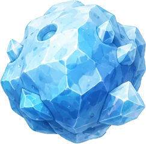
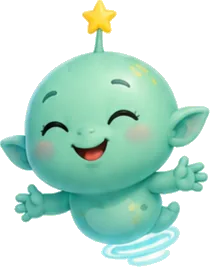
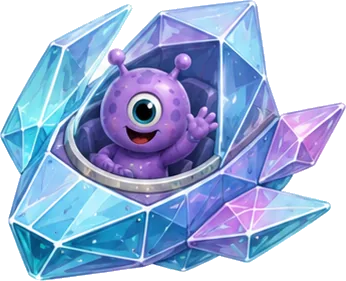
Tap a sparkling star on any page to meet a space friend and keep their sticker.
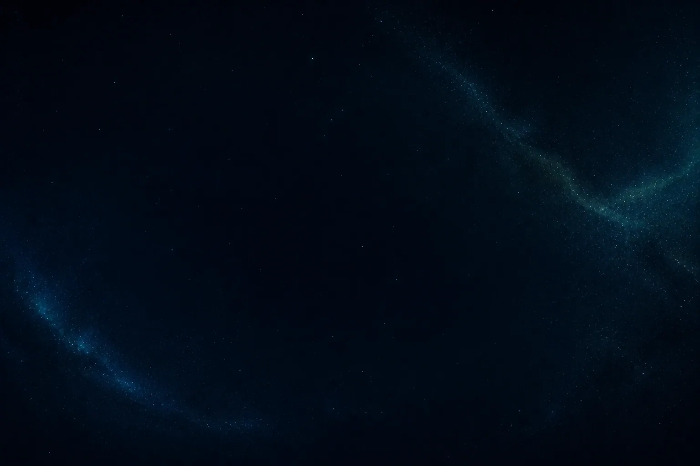
Blue-green Uranus rolls around the Sun almost on its side. Its unusual tilt brings long seasons, faint rings, and a lopsided magnetic field.
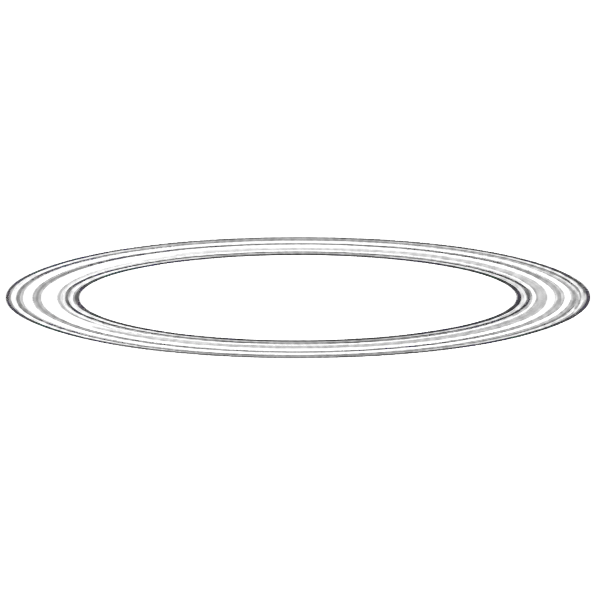
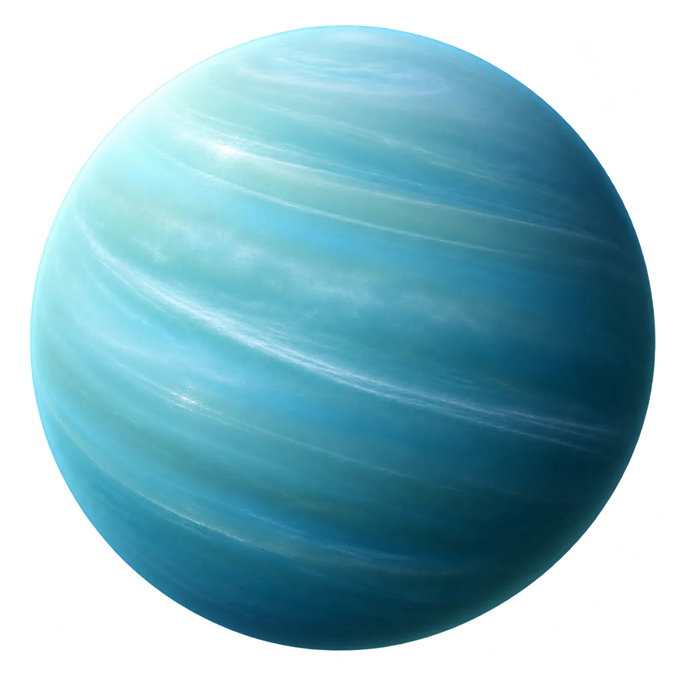
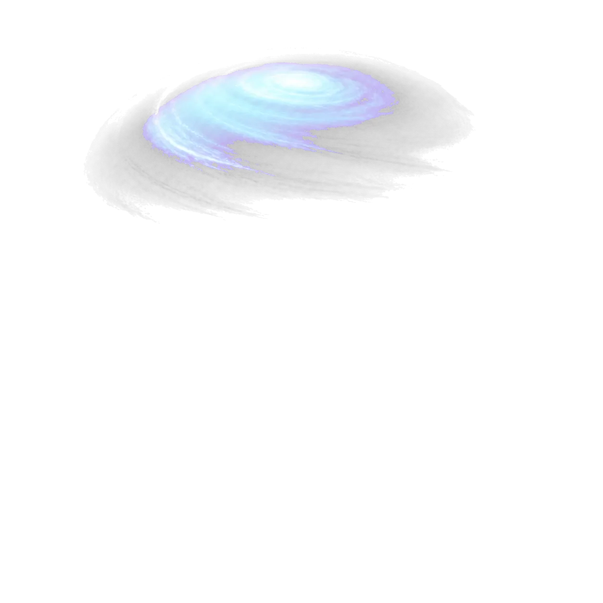
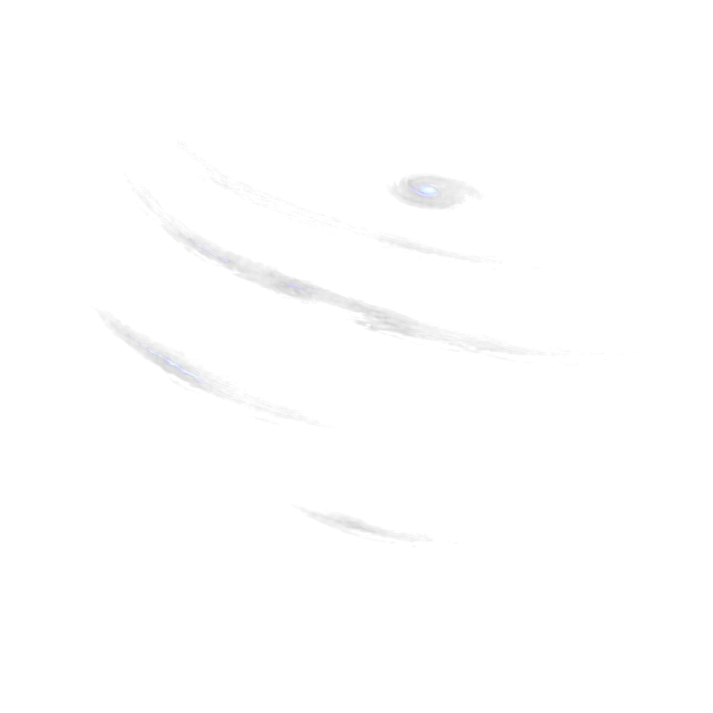
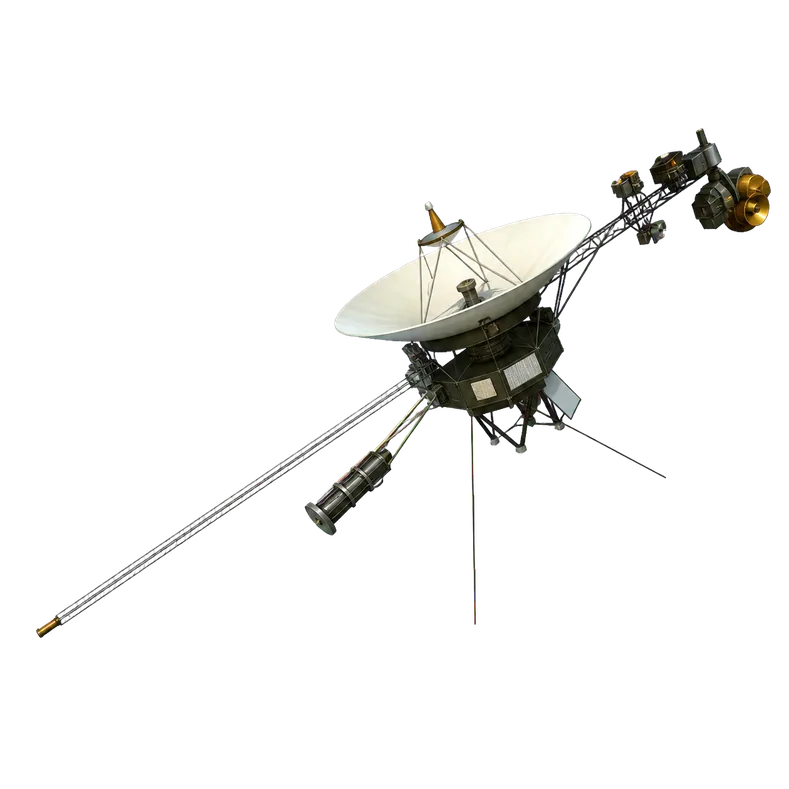
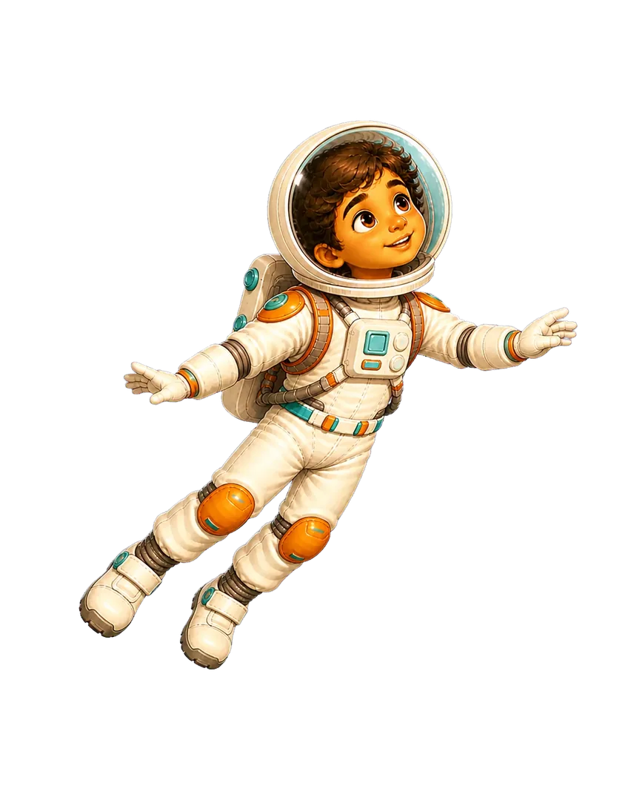
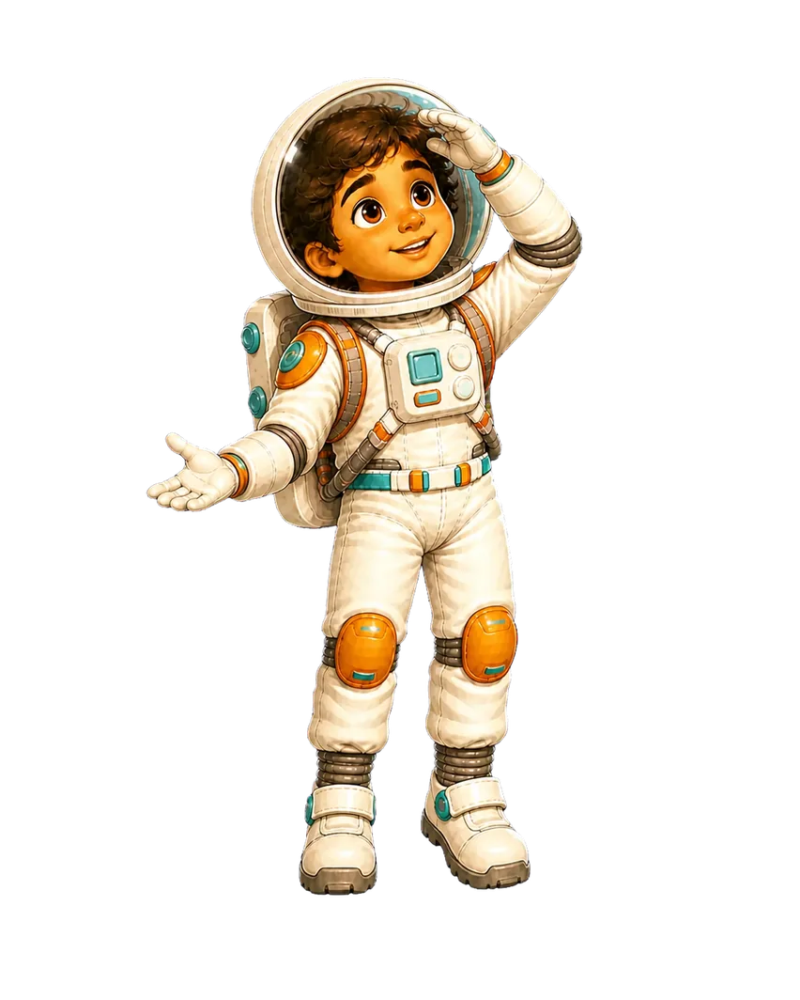
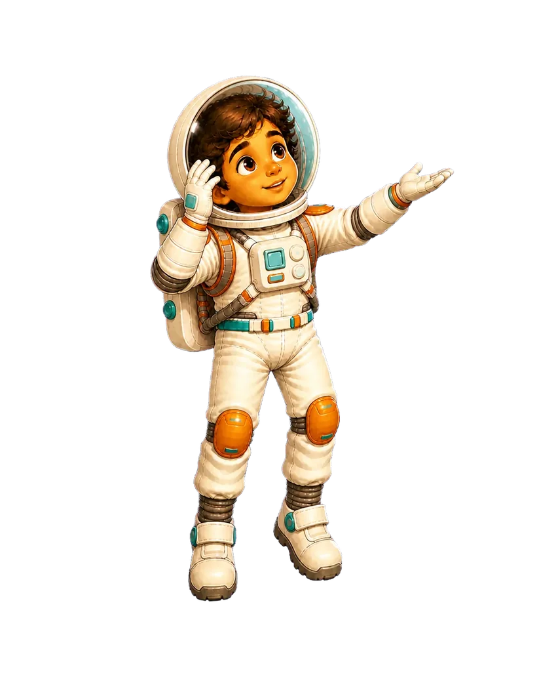
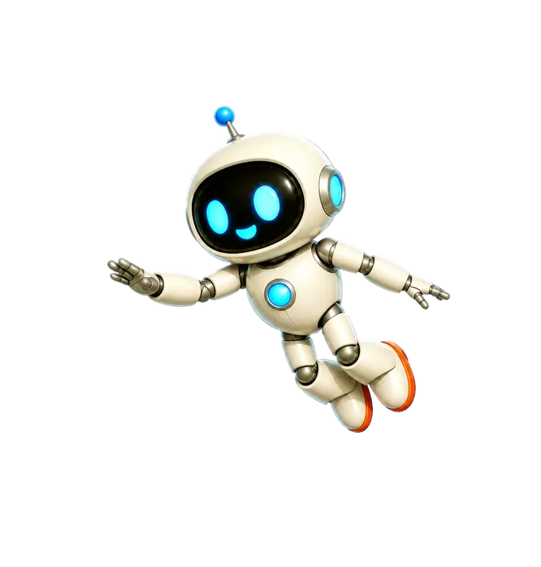
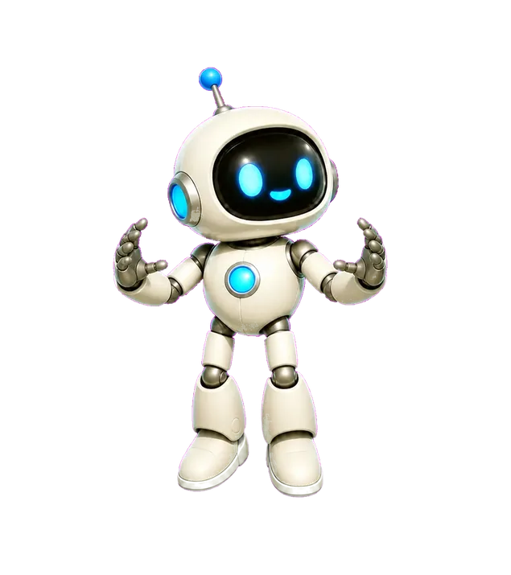
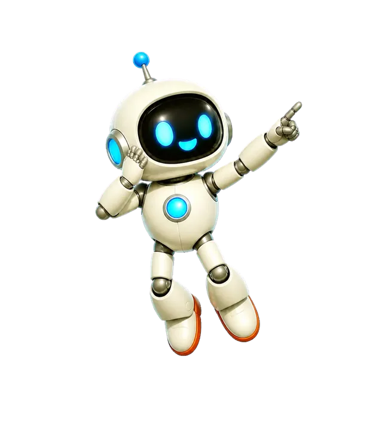
Tap the diagram to replay its motion. Diagrams are explanatory and not to scale.